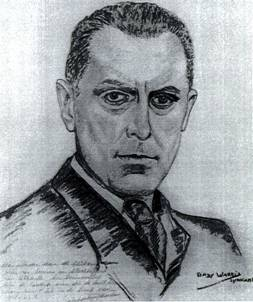
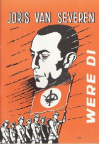
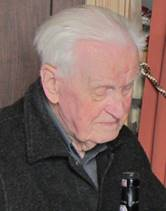
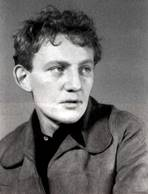

Jaarmis in de kerk van de abdij van zevenkerken
Zaterdag 17 mei: 14.30 uur: Plechtige
Gregoriaans gezongen H. Mis met homilie, opgedragen door de
E.H. Roeland van Steenkiste, in de
Abdijkerk van Zevenkerken ter nagedachtenis van Joris
van Severen, zijn lotgenoten en al onze overledenen.
16.00 uur: Receptie, aangeboden door de Stichting Joris
van Severen vzw
De Abdij van Zevenkerken:
Met de auto: Vanuit Brugge:
Torhoutsesteenweg volgen, over de autosnelweg rijden, tot aan
de Abdij aan de rechterkant.
Vanuit Brussel: E40 afrit 7bis (richting Zedelgem) nemen. Aan de
rotonde aldaar rechtsaf richting Brugge, tot voorbij het
rondpunt (Heidelberg), richting Brugge. Ongeveer
Vanuit Oostende: E40
afrit 7 (richting Brugge-Loppem-Zedelgem, richting Zedelgem).
Verder als vanuit Brussel.
Groet aan het graf te Abbeville
Zondag 18 mei: afspraak om 11.30 uur aan de
toegang tot het kerkhof te Abbeville. Aansluitend gezamenlijk
bezoek aan het graf van Joris van Severen en
Herdenking aan het Bourgoensche Cruyce
Zaterdag 24 mei:
11.00 uur: aan de toegangspoort
tot het Bourgoensche Cruyce, het voormalige woonhuis van Joris
van Severen in de Wollestraat te Brugge memoreert een
gedenkplaat de namen van de vier Brugse slachtoffers van het Bloedbad van Abbeville.
Sinds enkele jaren wordt daar door het Brugse Abbeville Comité jaarlijks
een korte herdenkingsplechtigheid gehouden rond de datum van
20 mei. Dit jaar valt die plechtigheid, omwille van
organisatorische redenen NIET op dezelfde datum als deze van
de herdenkingsmis te Zevenkerken, maar wel op zaterdag 24 mei om
11.00 uur. Na
enkele korte toespraken door o.m. een afgevaardigde van het
Brugse Stadsbestuur -
en waarbij speciaal aandacht wordt besteed aan de recent
overleden Gaby Warris de laatste getuige van het drama van
Abbeville - wordt de plechtigheid besloten met een
bloemenhulde aan de gedenkplaat.
Steun en info
De herdenkingen te Zevenkerken en te Abbeville zijn
een initiatief van de Stichting Joris van Severen,
terwijl de herdenking aan het Cruyce van Bourgonje een
initiatief is van het Brugse Abbeville-comité.
Wenst u op de hoogte gehouden
te worden van de activiteiten van de Stichting Joris van
Severen vzw, dan kunt u zich wenden tot de
voorzitter
Voor het bezoek aan het graf
te Abbeville op zondag 18 mei maken we gebruik van de
samen-rijden-formule op koste delende basis. Dit initiatief
wordt gecoördineerd door
Maurits Cailliau
Onder deze titel bracht Edwin
Truyens in Kort Manifest, nr. 207,
november-december 2013 alsnog een vrij uitgebreide recensie
van het 17e Jaarboek Joris van Severen (2013).
Het leeuwenaandeel van de bespreking gaat terecht naar het piéce de résistance,
van dat jaarboek, zijnde het breed bemeten essay van de hand
van Romain van Landschoot De eerste grote synthese -
Joris van Severen 1924.
Truyens besluit kan op het
eerste zicht verbazing wekken: hij ontzegt Joris van Severen
het recht zich op het nationalisme te beroepen. En dit niet
slechts vanaf 1934 (de Nieuwe Marsrichting), maar al van
direct na de Eerste Wereldoorlog.
Verwonderlijk? Hoegenaamd
niet! Ik meen dat Joris van Severen zelf de inhoud van
Truyens nationalisme-begrip indachtig zich niet verzet zou
hebben tegen het boude besluit van de recensent. Misschien zou
hij die bewering als iets te kort door de bocht beschouwd,
maar in se niet onterecht bevonden hebben.
Nationalist kan zich slechts
heten wie denkt en handelt in overeenstemming met de
nationalistische levensbeschouwing, meent Truyens. Waarbij hij
beklemtoont dat te onderscheiden wie nationalist is en wie
niet, trouwens geen gemakkelijke opgave is. Een klus die
Truyens ten overstaan van Joris van Severen niettemin
moeiteloos weet te klaren.
Heeft Joris van Severen dan
ten onrechte het predicaat Vlaams-nationalist voor zich
opgeëist? Beslist niet! Maar het komt wel intellectueel
oneerlijk over om de gedachten van een twintigjarige te
beschouwen als een eindpunt van zijn geestelijke ontwikkeling.
Joris van Severen had
doorheen de ellende van de Eerste Wereld-oorlog inderdaad
nieuwe einders ontdekt. Met zijn maandblad Ter Waarheid had hij
Europese horizonten verkend en tot de zijne gemaakt, die
inderdaad mijlenver afstonden van de Vlaams-nationalistische
krabbenmand van die dagen. Niettemin betitelde hij zijn
baanbrekend essay van 1924 kort en bondig met Vlaams Nationalisme. In
het toenmalige Vlaams-nationalistische wereldje zullen velen
de inhoud van dat essay als vloeken in de kerk beschouwd en
ervaren hebben. We denken meer bepaald aan passages als:
Indien het nationalisme ons geen methode geen element van
methode aan de hand doet voor de klassieke
Europa-architectuur, dat het nationalisme dan naar de duivel
lope. Of nog: Indien wij met nationalisme iets anders willen
dan het opbouwen in όns milieu, in όns vaderland, met όnze
kracht, van een stuk klassiek Europa, laat ons dan liever gaan
boeren. Het zal nuttiger zijn. En, om ons te beperken: Graag
verklaar ik dat een van de krachtigste redenen waarom ik
Vlaams-nationalist ben, mijn geloof in de Europese
constructiviteit van het nationalisme is; mijn geloof in de
Europese constructiviteit van het Vlaams-nationalisme.
Dergelijke ingesteldheid
stond inderdaad mijlenver af van de toen (en nu?) binnen het
Vlaams-nationalisme vigerende gezichtseinders. Ze vonden
daarentegen wel hun weerklank binnen wat b.v. een Pierre
Drieux la Rochelle in Frankrijk of een Ernst Jünger in
Duitsland betoogden en nastreefden met hun herijking van het
nationalisme-begrip, na hun ervaringen in de Stahlgewittern van
de oorlog.
Het Vlaams-nationalisme dat
Joris van Severen in zijn gelijknamig essay beschreven had
maar waarvoor hij in Vlaanderen al te weinig weerklank geoogst
had was er een die hem besluiten liet dat het beter was te
gaan boeren. Hij liet het achter zich om nieuwe verrijkende
wegen in te slaan.
Na 1934 zou hij trouwens ook
de inhoud van zijn nationalismebegrip heroriënteren en verder
ontwikkelen in de lijn van zijn spraakmakend essay. De Natie
werd voor hem een historische eenheid, geen taalkundige of
etnische, laat staan racistische. Elke völkische
connotatie waaraan een Wies Moens onveranderd zou
vasthouden, met de definitieve breuk tussen beiden tot gevolg
verdween uit zijn discours. Bovendien kwam in de benaming
nationaal-solidarisme de klemtoon op het laatste begrip te
liggen. Het solidarisme als ordenend beginsel van de
maatschappelijke structuuropbouw.
Ten overstaan van de Nieuwe
Orde-bestrevingen in het Italië van Mussolini en het Duitsland
van Hitler nam hij op niet mis te verstane wijze afstand, toen
hij het onderscheid van zijn formatie met wat aldaar aan de
orde was scherp omschreef:
Fascisme:
primauteit van de Staat
Nationaalsocialisme:
primauteit van het ras.
Nationaalsolidarisme:
primauteit van de persoon.
Dit laatste begrip:
primauteit van de menselijke persoon, stond overigens
verankerd in het programma van het Verdinaso: het veilig
stellen voor eenieder: de mogelijkheid tot bereiking van zijn
eindbestemming, zijn eeuwig Goed: God, bron van alle recht en
alle Orde. Het nationaal-solidarisme van Joris van Severen
had aldus in de jaren van het interbellum het völkische
nationalisme inderdaad ver achter zich gelaten, was weg
gegroeid van het Vlaams-nationalisme, om uit te groeien tot
een personalistische kijk op mens en gemeenschap.
Ons rest dus slechts de door
Edwin Truyens opengetrapte deur open te laten en zijn
redenering te beamen: organisch solidarisme en personalisme
stonden (en staan ook nu nog) mijlenver af van het
nationalisme-begrip à la Wies Moens die overigens een vurig
pleitbezorger bleef van het solidarisme - en Edwin Truyens (Kort Manifest is
het orgaan van het Vormingsinstituut Wies Moens).
Eerder dan dit als een smet
op Van Severens blazoen te ervaren, situeert het hem op een
het nationalisme overstijgend en beduidend hoger niveau. Het
brengt hem in het gezelschap van andere Europese evenknieën
uit de oorlogsgeneratie, die op een parallelle wijze hun
gedateerd nationalisme inruilden voor een meer belovend
project dat aansloot bij het Europese verleden en tegemoet
kwam aan een al evenzeer nodig eigentijds Europees
toekomst-perspectief.
Vlaams student, Studiecentrum Joris van Severen zoekt en beloont scriptieschrijvers!
Bert Deckers
Het Studiecentrum Joris van Severen is een
vereniging zonder winstoogmerk die de studie naar de persoon
en de ideeën van Joris van Severen (1894-1940) wenst te
bevorderen. In de loop van de afgelopen decennia is daartoe
een archief aangelegd rond Joris van Severen en zijn bewogen
politieke loopbaan, in het bijzonder het Verbond van Dietse
Nationaalsolidaristen (Verdinaso). Dit archief is in 2000
overgedragen aan de universiteitsbibliotheek van de Katholieke
Universiteit Leuven en werd aldaar ondertussen
geïnventariseerd door dr. B. Coppein.
Het
doel van de archiefoverdracht was om de wetenschappelijke
studie over Joris van Severen en het Verdinaso te stimuleren.
Het Studiecentrum wil deze studie actief gaan bevorderen door
het instellen van een scriptieprijs voor studenten, waar een
geldbedrag van thans: 2014 -
400 aan is verbonden.
Het
Joris van Severen-archief aan de KU Leuven is nog grotendeels
onontgonnen en een wetenschappelijke biografie ontbreekt
vooralsnog. Er is met andere woorden sprake van historisch
onontgonnen terrein en ook ideologisch roept de
persoonlijkheid van Joris van Severen nog steeds veel vragen
op rond zijn politieke ontwikkeling. Ook is er nog nauwelijks
iets bekend over de samenstelling van zijn aanhang.
Op
basis van minimaal twee inzendingen zal een commissie binnen
het Studiecentrum de prijs al dan niet toekennen aan een
scriptie die handelt over de persoon Joris van Severen, het
Verdinaso of één van de naoorlogse Nachfolge-bewegingen.
De scriptie hoeft niet noodzakelijk een eindscriptie te zijn,
maar dient ten minste tien A4-paginas te bevatten.
Het
Studiecentrum Joris van Severen zal de uitreiking van deze
scriptieprijs gepast omkaderen en de auteur de gelegenheid
bieden om de scriptie te publiceren in het jaarboek van het
Studiecentrum. De auteur zal een exemplaar van het jaarboek en
tien overdrukken ontvangen.
Mocht
u nog vragen of opmerkingen hebben, aarzel dan niet om contact
met het secretariaat op te nemen.
Secretariaat
Studiecentrum
Joris van Severen, Paddevijverstraat 2 B. 8900 Ieper (tel.
057- 204 194) maurits.cailliau@skynet.be
____________
Bron: http://rechtsactueel.com/2012/01/16/vlaams-student-studiecentrum-joris-van-severen-zoekt-en-beloont-scriptieschrijvers/
Laatste uren met Joris van Severen
Pol le Roy
10 mei l940. s Ochtens, na
definitieve bevestiging van de Duitse inval,
nam ik in Gent de doorgaande
trein naar
Brugge. Ben omstreeks 9
uur bij de Leider. In de voormiddag komt ook
Mijn eerste vraag aan de leider was, of hij geen proclamatie zou
bekend maken. Wegens
het algemeen gekend standpunt van het
Verbond, achtte hij
dit totaal overbodig.
Zelf leek hij
onthutst over de Duitse inval. Hij zag geen
duidelijke reden voor zulke stommiteit.
Wijl om de
haverklap de sirenen loeiden,
gekscheerde de Leider: Weera1 een duif die ze te hoog zien
vliegen hebben.
Terwijl wij de toestand en de eventuele gevolgen bepraatten,
verklaarde hij o.m.:
Nu we samen met de
Noord-Nederlanders in dezelfde strijd staan en samen ons bloed
vergieten,
wordt wellicht de grondslag
gelegd om gemeenschappelijk
ons doel te bereiken. Nu is het uur
gekomen. Verder: t
Zal maar een goei
veertien dagen duren eer de Duitsers in
Zeebrugge staan.
Rond 11 uur gaan wij
samen - Jan, de leider en ik - een kijkje nemen in de stad en
zien op de Grote Markt indrukwekkende Franse gemotoriseerd eenheden voorbij trekken,
richting Nederland.
Bij onze terugkeer tegen t middaguur
duurde die voorbijmars
voort. Wat ons
de bedenking ontlokte dat de Fransen
net voldoende verrast waren om,
binnen de kortste keren gevechtsklaar door Brugge
te trekken
Jan verliet, ons met een
tot vanmiddag. Weer thuis: aperitief, middagmaal in gezelschap van
een Dame. Terwij1 wij, na t eten, de koffie gebruiken wordt omstreeks 3 uur aangebe1d. Van Severen gaat opendoen. Vóór
hem staan 4 mannen van
de Sûreté.
Huiszoeking (vrij
oppervlakkig). De leider zegt met een spotlachje: Pol ze zoeken naar
wapens en uniformen.
Nadien wordt hem betekend dat hij onder
aanhoudingsmandaat staat en mee moet. Mij heeft men niet eens
mijn identiteitskaart gevraagd. De leider meent dat een vergissing
in t spel is en hij vlug op
vrije voeten zal staan.
Hij vraagt mij tot de vo1gende dag te blijven (desnoods langer). Anna (de meid) kent u en
zal voor alles
zorgen en t likeurkastje
weet ge
staan.
Ik tracht de Dame,
die zeer onder den indruk is, gerust te stellen. Doch weinige
minuten later
wordt er weer aangebe1d. 1k ga openen. Vergezeld van een der
Staatsveiligheidsagenten staat Joris van Severen voor mij: Pol,
hoeveel geld hebt ge nog? Ik geef hem bescheid. Hij vraagt of ik nog iets persoon1ijks te
betalen heb. Ja, een deel van mijn op afbetaling gekocht pak.
Bon: hij opent
zijn portefeuille. Dan delen we.
Hij geeft me 300 van
de 600 frank in zijn bezit. Ik wil weigeren.
Nog een stevige handdruk, de eenheid van ons beider blik
(zoals bij onze eerste
ontmoeting), Hei1 t Dinaso!
Ik zou hem niet meer
wedergezien,
________________
Bron: Ter Waarheid over Joris van Severen,
jg. 1993, nr. 2, p. 7
De ideologische oriëntering van de katholiek studerende jeugd in Vlaanderen (1936-1940)
Louis
Vos
In de loop van de jaren
dertig verloor de oude katholieke Vlaamse studentenbeweging en
haar organisatie, het Algemeen Katholiek Vlaams
Studentenverbond (AKVS), haar greep op de katholieke
collegeleerlingen in Vlaanderen. Het conflict met de
kerkelijke overheid omwille van haar Vlaams-nationalistische
oriëntering had haar sinds de jaren twintig steeds meer
terrein doen verliezen, de interne spanningen tussen voor- en
tegenstanders van aansluiting bij het in 1931 opgerichte
Verdinaso van Joris van Severen hadden geleid tot het
uittreden in 1933 van de meest radicale elementen die Dinaso
werden, en na 1933 had de kritiek van het nog resterende kern
AKVS op het VNV nogmaals gezorgd voor een decimering van de al
uitgedunde rangen, die nauwelijks werd goedgemaakt door de
steun die deze kerngroep nu kreeg van de sinds de nieuwe
marsrichting van het Verdinaso politiek dakloos geworden
Volks-Dietsers zoals Wies Moens, en door de steun van vroegere
leden van de in 1935 opgeheven Jong-Nederlandse Gemeenschap.
Toen het Algemeen Katholiek
Diets Studentenverbond, zoals het AKVS sinds 1935 heette, in
1937 verruimd werd tot een Diets Jeugd-verbond (DJV) en
voortaan ook een afdeling niet studenten telde gaf dat niet
veel nieuwe armslag.
Aan de vooravond van de
tweede wereldoorlog telde de organisatie maar een tiental
groepen en minder dan 200 leden, al bereikte ze een groter
publiek door propaganda naar buiten, o.m. door de jaarlijkse
verkoop van een Groot-Nederlands agenda dat op 5000 exemplaren
werd gedrukt. (p. 208)
Naast deze meer algemene
verenigingen ontstonden in de loop van de jaren dertig een
hele waaier politieke studentenformaties waarvan de Verdinaso-
en VNV-studentenafdelingen - die ook in Gent bestonden - de
belangrijkste waren. De Dinasos domineerden zelfs in 1933-34
het Leuvense KVHV en groeiden in 1936 aan tot een 150 leden,
maar raakten toen geïsoleerd van de andere
studentenverenigingen en moesten in de laatste jaren voor de
oorlog de VNV-afdeling de eer laten de sterkste politieke
formatie te zijn in Leuven. Een eigen plaats nam de
universitaire afdeling van het Jong Volkse Front in. Het
bestond te Leuven van 1935 tot 1938 en ijverde voor
samenwerking van KVV en VNV. De lijn van het Jong Volkse Front
werd vanaf 1937 verder gezet in de universitaire afdeling van
het Jeugdfront te Leuven. Ook te Gent had Jeugdfront een
afdeling onder de naam Katholieke Vlaamse Studentenvereniging.
Jeugdfront richtte zich vooral op de vernieuwing van binnen
uit van de KVV. (p. 212) Het standpunt van de Dinasostudenten,
dat we enkel kennen voor de periode 1934-1936, kwam overeen
met dat van de partij. Sedert de nieuwe marsrichting in de
zomer van 1934 zagen zij als enige oplossing voor het
nationaliteitenprobleem in België het herstel van de
Bourgondische Nederlanden met inbegrip van Wallonië en
Friesland: het Verdinaso had daarbij de "onvruchtbare spanning
en democratische antithese flamingant-franskiljon geliquideerd
door de besten van beide kampen op een hoger Diets plan te
verzoenen". Ook zij wezen het federalisme van de hand omdat
het een democratische ingreep was die de nieuwe orde niet
dichterbij zou brengen maar "marxisme, kapitalisme,
klerikalisme en liberalisme" zou laten bestaan. Verder omdat
zich terugtrekken op de taalgrens een capitulatie betekende op
het ogenblik dat het Vlaams overwicht zo sterk was dat de kans
bestond heel België te veroveren. En tenslotte omdat bij
federalisme het centrale gezag bevoegd zou blijven inzake
militaire, internationale en economische politiek en
Vlaanderen dus gevaar liep door een samenspannen van Walen en
Brusselaars op die terreinen slachtoffer te worden van een
antinationale politiek. (p. 216)
De nieuwe staat die de
Verdinaso-studenten voor ogen stond was daarentegen zo niet
dictatoriaal dan toch autoritair en aristocratisch. De leiding
ervan zou in handen liggen van een op solidariteit gesteunde
hiërarchie van de besten, die uit alle standen zouden worden
aangeduid. Iedereen diende politiek actief te zijn op zijn
eigen plaats. De medezeggenschap beperkte zich tot het recht
met deskundigheid de staatsleiding ter verantwoording te
roepen. (p. 223)
______________
Bron: www.journalbelgianhistory.be/.../BTNG-RBHC,%2008,%201977,%2...
Karel
Engelen (Veerle 28 mei 1924 Brasschaat 21
januari 2014). Karel was in de beginjaren 50 onder meer
betrokken bij het elitaire jeugdtijdschrift Het voorste Vendel, opvolger
van Het gulden Vlies, beide
onder impuls van André Belmans. Hij was Ere Regionaal
Directeur ASLK Antwerpen, Commandeur in de Kroonorde, Lid van
de OvdP Middelheim en stichter en erebestuurder van meerdere
sociale verenigingen.

Daniël Merlevede (Geluveld 18 november 1911 - Oostakker 28 januari
2014), een man die zijn hele leven voor veel actief was en
in het bijzonder voor de Nederlanden van het uiterste
Noorden tot diep in Frankrijk én in het ANV dat hij een
warm, bezorgd hart toe droeg.
Zijn bezieling groeide uit zijn AKVS-tijd en het
latere Diets Jeugdverbond. In de repressiejaren stond hij
mee aan de wieg van Rommelpot
en van Het spoor
voor de Lage Landen. Een geestgenoot die, hoewel geen
Dinaso, ons streven nabij stond.
De
Verwondering op de bühne een afknapper
Frederic van Waeyenberge
In 1962 verscheen de roman De Verwondering van
Hugo Claus. Het Toneelhuis zorgde recent voor een
theatervoorstelling van dat werk, in een regie van Bart
Meulman. Thema van het boek is de
nawerking van repressie en collaboratie. In
dagboekfragmenten probeert de leraar Victor-Denijs De
Rijckel, een psychiatrische patiënt, zijn identiteit opnieuw
samen te stellen. Zijn tocht naar een kasteel, waar een
minnares op hem wacht en  waar hij belandt in een
herdenking van de foute oorlogsheld Crabbe, kan je lezen als
de bevrijding van zijn onvolwassenheid. Niet voor niets is
een levenswijze schoolknaap onderweg zijn compagnon.1
Regisseur Bart Meuleman over de figuur van Crabbe: Aanvankelijk weet de
Rijckel niet wie Crabbe is. Hij verneemt dat hij de
luitenant is van een zekere de Keukeleire, vermoord in mei
1940 in Frankrijk. Dat kan natuurlijk alleen maar Joris
van Severen zijn, de leider van het extreemrechtse
Verdinaso. Het is niet zeker of Crabbe op een reële
persoon gebaseerd is, maar het verhaal speelt zich helemaal in die
extreemrechtse sfeer af.2
waar hij belandt in een
herdenking van de foute oorlogsheld Crabbe, kan je lezen als
de bevrijding van zijn onvolwassenheid. Niet voor niets is
een levenswijze schoolknaap onderweg zijn compagnon.1
Regisseur Bart Meuleman over de figuur van Crabbe: Aanvankelijk weet de
Rijckel niet wie Crabbe is. Hij verneemt dat hij de
luitenant is van een zekere de Keukeleire, vermoord in mei
1940 in Frankrijk. Dat kan natuurlijk alleen maar Joris
van Severen zijn, de leider van het extreemrechtse
Verdinaso. Het is niet zeker of Crabbe op een reële
persoon gebaseerd is, maar het verhaal speelt zich helemaal in die
extreemrechtse sfeer af.2
Claus zelf noemde deze
complexe roman zijn beste werk. Hij is geschreven in een
briljante stijl, hallucinant door de obsessie van angst,
waanzin en zelfvernietiging, en met een voortdurend wisselend
vertelperspectief.3 Ik heb het boek een 10-tal jaar
geleden gelezen, en had het in het begin wat moeilijk om vat
te krijgen op het verhaal. Maar eenmaal dat gebeurd was, werd
ik meegesleept door deze gelaagde en boeiende roman. Het is
het soort boek dat bij iedere pagina doet verlangen naar meer.
Zelf heb ik de
toneelvoorstelling gezien in de Vooruit, op vrijdag 7 maart
2014. We gaan regelmatig naar het toneel, maar het was een
teleurstellende
opvoering die een beetje alle richtingen uitschoot en me niet
aangreep zoals dat wél het geval was met voorstellingen zoals
Missie of Singhet ende weset vro.
In tegenstelling tot het boek, nam mijn enthousiasme hier niet
toe naarmate het verhaal zich verder ontwikkelde. Integendeel:
na een uur begon ik heimelijk naar mijn smartphone te turen
hoe lang nog? En dat is ook de algemene teneur van de
recensenten. De
Standaard gaf de voorstelling 3 van de 5 sterren, en De Morgen een flauwe
2,5 van de 5 sterren.4 Een vaak gehoorde commentaar
is dat De Verwondering
te veel literatuur blijft en nooit uitgroeit tot een
krachtige voorstelling.5 Bovendien - merkt
Guido Lauwaert op - blijft de vraag bestaan of de generaties
vanaf 1960 wel volkomen de thematiek begrijpen, zelfs al is
die in de bewerking van Meuleman gestript.6 Dat was
niet meteen mijn probleem, maar deze toneelvoorstelling was
gewoon niet OK.
___________
Noten
1 Geert van der Speeten, Heldenverering in de
West-Vlaamse klei, De
Standaard, 25/1/2014.
2 Flyer (4 blz.) verdeeld bij
het begin van de voorstelling, titel: Toneelhuis. Bart
Meuleman. De Verwondering. Om de voorstelling enigszins te begrijpen, was
het zeer raadzaam om deze flyer vooraf te lezen.
3 Alfons Sengier, Joris van
Severen in de literatuur, in: Maurits Cailliau (red.), Gedenkboek Joris van
Severen 1894-1994, blz. 86
4 Jan de Smet, Samenhang
gezocht. Toneelhuis brengt bewerking van De Verwondering van
Claus, De Morgen, 27/1/2014.
5 Geert van der Speeten,
Heldenverering in de West-Vlaamse klei, De Standaard,
25/1/2014.
6 Guido Lauwaert,
Theater: deftig theater. Punt, www.focus.knack.be, 26.
In
deze rubriek verwijzen we zonder veel commentaar naar
recente publicaties waarin Joris van Severen en/of het
Verdinaso vermeld worden. We citeren de meest treffende
passussen woordelijk zonder daarin volledigheid na te
streven. We verzoeken onze lezers, met ons, uit te zien naar
publicaties die voor deze rubriek 'stof' kunnen leveren en
ons kopie van de betreffende passages toe te sturen.
Joris
van Severen
(
.)
Weinig Vlaamse persoonlijkheden uit de jaren dertig van de
vorige eeuw zijn zo invloedrijk geweest als Joris van
Severen., over geen enkele persoon (denk ik) werden meer
boeken geschreven, aan weinigen worden meer studies gewijd,
enz. maar Van Severen was na enkele keren verkozen te zijn
geweest in de Kamer, een resoluut tegenstander geworden van de
deelneming aan verkiezingen, want macht en invloed werden op
een andere manier verworven. (
)
________________
Mark
Grammmens, t
Pallieterke, 5 maart 2014, p. 3.
Van Severen
Le bulletin
trimestriel du centre détude Joris van Severen signale les
travaux entrepris sur le Verdinaso par le Wolfson Institute de
luniversité americaine de Miami, qui la sollicité pour y
participer. Joris van Severen, ancien député belge qui sétait
conduit de manière à la fois héroïque et insubordonnée durant
la guere de 1914-18, avait fondé par la suite le mouvement
national-solidariste des Grands Payas-Bas, à rebours de la
politique anglo-saxonne de division du vieux Continent. Arrêté
en mai 1940 et expédié en France avec un convoi de suspects,
il sera dans la débâcle fusillé sans jugement avec 21 autres
espions par des militaires français en débandade. Le
gouvernement belge présentera des excuses. Van Severen
estimait que considérer la Flandre comme germanique homogène
était aussi appauvrissant que vouloir la franciser de force,
mais que la Belgique se montrait réfractaire à une synthèse
féconde de la latinité et de la germanité.
_________________
Bron: Renaissance Européenne, nr.
98, 1e kwartaal 2014, pp. 17-18.
Ast
Fonteyne
(
)
Geen wonder dat Fonteyne (geheim) lid werd van het Verdinaso
van Joris van Severen, omdat het zoveel aandacht besteedt aan
een keurig uiterlijk, aan discipline en aan volksverheffing
(waar nu zo lacherig over gedaan wordt) via een elite. En het
autoritaire van Van Severen sluit erg nauw aan bij Fonteynes
persoonlijkheid. In 1940 komt hij uit de kast en wordt
verrassend jeugdleider. Maar hij is een vreemde eend in de
bijt, niet antisemitisch en zelfs geen separatist. Alte
Kämpfer als François en Poppe werken Fonteyne zo vlug
mogelijk uit het Verdinaso.(
)
__________________
Bron: Jan
Neckers, Ast Fonteyne, in t Pallieterke, 29
januari 2014, p. 4.
Reijer
Godefrooij (1911-1942)
Zijn eindexamenwerk (aan de tekenacademie) uit
1935 is nog te zien in Amsterdam in de Rijksacademie. In de
familie wordt verteld dat hij de Prix de Rome heeft gewonnen
(
). Ook zou hij het plafond van de St. Salvatorkerk in
Zuilen geschilderd hebben. De overlevering vertelt
dat hij in 1941 een grote opdracht had gekregen, nl. het
schilderen van de staties van een nieuwe kerk in Amsterdam
en dat hij er twee af had toen hij stierf. In de jaren '30
was hij lid van Verdinaso. Het lijkt
waarschijnlijk dat hij en mijn vader Gerard Sjamaar elkaar
daar ontmoet hebben. Er was in ieder geval een
club van jonge katholieke mannen met hoge idealen.
___________
Bron:
http://www.familiekronieken.eu/Godefrooij/Reijer%20Godefrooij.html